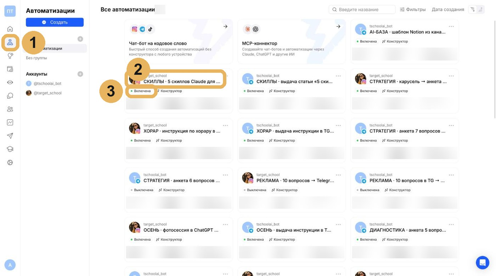
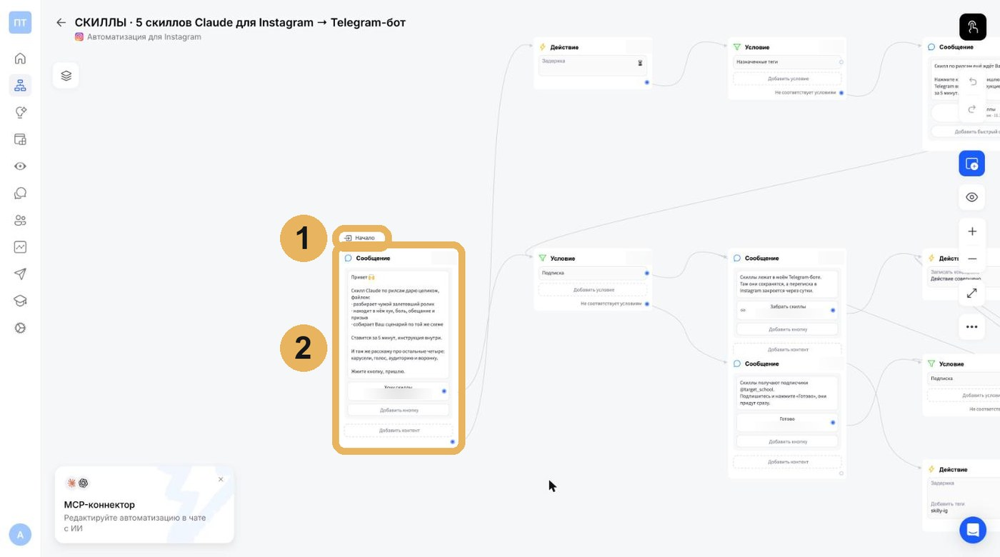
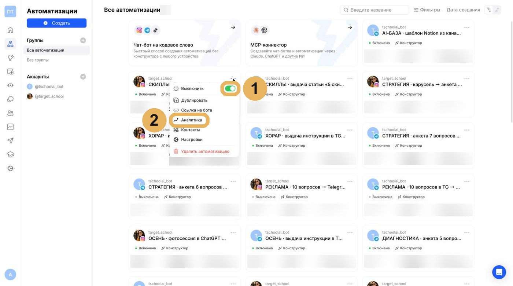

Хочу как у Анастасииинструкция
Модуль 3.4
Воронка на кодовое слово: по шагам
Всё, что в видео показано быстро, здесь по шагам и со скринами. Идите сверху вниз, на каждом шаге сверяйтесь с картинкой.
ПонадобитсяChatPlace с подключёнными соцсетью и Telegram-ботом, коннектор ChatPlace в Claude, второй аккаунт в соцсети для теста и чек-лист теста из материалов.
1
Найдите воронку, которую собрал Claude
Воронку собирает проводник по Вашей команде. В ChatPlace слева откройте «Автоматизации» (1). Найдите карточку с названием, которое назвал проводник: в нём стоит кодовое слово (2). Под названием статус: «Включена» или «Выключена» (3). Пока Вы читаете тексты, воронка стоит выключенной.

Должны увидеть: карточка Вашей воронки есть в списке, статус «Выключена».
2
Прочитайте тексты в схеме
Нажмите на название карточки, откроется схема. Слева «Начало» (1): отсюда воронка стартует, когда человек пишет слово. Проверьте первое сообщение (2): до магнита человек доходит в одно нажатие, без лишних шагов. Читайте тексты как человек, который видит Вас впервые. Править их просите проводника, руками в схеме ничего не двигайте.

Должны увидеть: тексты прочитаны, правки отправлены проводнику или их нет.
3
Включите по слову «включай»
Включает проводник, когда Вы напишете ему «включай»: сначала Telegram-бот и ссылка, потом воронка в соцсети, автоответы последними. Включить или выключить руками можно в карточке: три точки справа и переключатель (1). «Аналитика» (2) в том же меню покажет, сколько людей прошло по шагам. «Удалить автоматизацию» не нажимайте.

Должны увидеть: в карточке статус «Включена».
Не получилось: карточка не включается? Напишите проводнику, на каком шаге, и загляните в лимиты тарифа: через коннектор их не видно.
4
Пройдите тест со второго аккаунта
Со второго аккаунта напишите слово под своим постом и пройдите весь путь по чек-листу теста из материалов: ответ в директе, ссылка, переход в Telegram-бот, магнит. Магнит должен открываться с телефона, без входа.
Должны увидеть: со второго аккаунта магнит пришёл сам, а в боте появился новый контакт.
Не получилось: какой-то шаг не сработал? Напишите проводнику, на каком именно, чинит он. Публикуете пост только после теста.